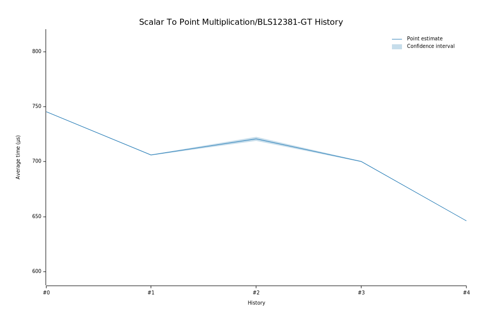

# 42024-02-01T09:14:10Z
|
Lower Bound |
Estimate |
Upper Bound |
| Value: |
646.27µs |
646.37µs |
646.48µs |
| Change in Value: |
-7.6967% |
-7.6597% |
-7.6251% |
No change in performance detected.
# 32024-01-09T09:56:35Z
|
Lower Bound |
Estimate |
Upper Bound |
| Value: |
699.82µs |
700.07µs |
700.49µs |
| Change in Value: |
-3.4575% |
-3.2141% |
-2.9742% |
No change in performance detected.
# 22023-06-01T08:56:32Z
|
Lower Bound |
Estimate |
Upper Bound |
| Value: |
719.03µs |
720.78µs |
722.58µs |
| Change in Value: |
+2.1711% |
+2.4262% |
+2.6708% |
No change in performance detected.
# 12023-04-27T10:43:12Z
|
Lower Bound |
Estimate |
Upper Bound |
| Value: |
705.82µs |
706.14µs |
706.39µs |
| Change in Value: |
-5.3165% |
-5.2671% |
-5.2254% |
No change in performance detected.
# 02023-03-09T11:48:29Z
|
Lower Bound |
Estimate |
Upper Bound |
| Value: |
745.15µs |
745.39µs |
745.61µs |